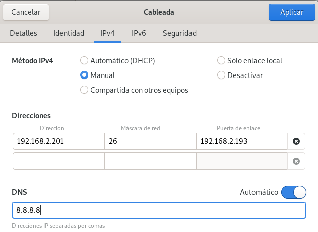
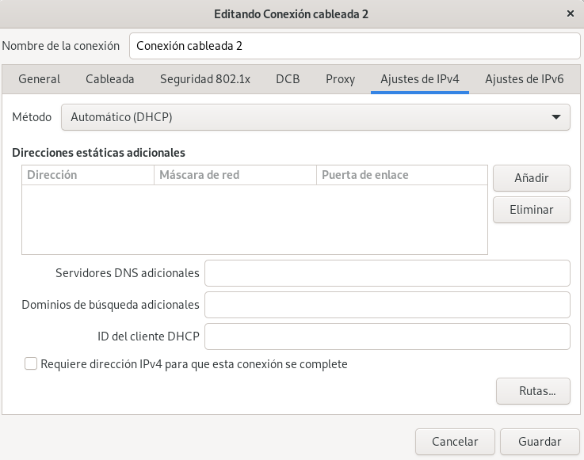

NETWORK MANAGER
INTRODUCCIÓN
La gestión de la red en Linux puede realizarse de diferentes maneras. En este tema se va a estudiar la gestión de la red mediante NetworkManager, que es una herramienta que permite configurar y gestionar las interfaces de red de forma gráfica o mediante comandos. En entornos en los que no se dispone de entorno gráfico, NetworkManager permite gestionar la red mediante la línea de comandos a través de la utilidad nmcli o utilizar la utilidad nmtui que proporciona una interfaz similar a la del entorno gráfico pero basada en texto.
La filosofía de NetworkManager es que la configuración de la red mediante comandos y no mediante ficheros de configuración. Por tanto, la configuración de la red, por defecto, es persistente y se mantiene tras reiniciar el sistema. Esta filosofía es la que siguen las distribuciones Linux basadas en Red Hat. En estas distribuciones la configuración de la red mediante ficheros de configuración es posible pero no recomendable.
En NetworkManager es más apropiado hablar de configuración de conexiones de red más que de interfaces de red individuales. Podemos tener varias conexiones de red configuradas para una misma interfaz de red, pero solo puede haber una conexión activa por cada interfaz en un momento dado. Una conexión activa es aquella cuyos datos de configuración se han asignado a una interfaz de red. Suele ser habitual llamar perfiles de conexión de red a las conexiones de red, aunque también se les denomina interfaces lógicas de red. A partir de ahora, a las interfaces físicas de red las llamaremos simplemente interfaces y a las interfaces lógicas conexiones.
A lo largo de este tema utilizaremos la distribución Rocky Linux, que es una distribución libre basada en Red Hat Enterprise Linux (RHEL) y que utiliza NetworkManager como herramienta principal para la gestión de la red. Esta distribución viene a sustituir a CentOS, que actualamente se considera obsoleta y ya no se proporciona soporte.
GESTIÓN DE LA RED CON NMCLI
La sintaxis del comando nmcli es la siguiente:
nmcli [<opciones>] <objeto> {<comando> | help}
El parámetro <opciones> permite especificar opciones globales que afectan al comportamiento del comando. Principalmente se utilizan paras controlar el formato de presentación de la salida del comando en pantalla. Las opciones más utilizadas son:
- Opción
-t: permite mostrar la salida del comando en un formato más compacto y legible. - Opción
-p: permite mostrar la salida del comando en un formato más detallado y completo.
El parámetro <objeto> indica el tipo de objeto sobre el que se va a realizar la operación. Los objetos más comunes son:
general: Permite ver el estado y permisos de NetworkManager, consultar y cambiar el nombre del equipo y configurar el sistema de registro de bitácora (logging) entre otros aspectos generales del sistema de red.device: Permite ver y administrar las interfaces de red.connection: Permite ver y administrar las conexiones de red.
El parámetro <comando> indica la acción que se desea realizar sobre el objeto especificado. Es dependiente del objeto y puede variar según el objeto seleccionado.
Con el parámetro help se puede obtener información sobre los comandos disponibles para cada objeto y sobre las opciones globales del comando nmcli.
MOSTRAR ESTADO DE LA RED
El comando nmcli general status permite ver el estado general de la red y de NetworkManager. La sintaxis del comando es la siguiente:
nmcli general status
Es posible utilizar abreviaturas para los parámetros del comando siempre y cuando no haya ambigüedad. Por ejemplo, el comando anterior se puede escribir de la siguiente manera:
nmcli g s
Mostrar estado de la red
Mostrar el estado general de la red y de NetworkManager.
root@RL:~# nmcli general status
STATE CONNECTIVITY WIFI-HW WIFI WWAN-HW WWAN
connected full missing enabled missing enabled
La ejecución del comando nos indica que el estado de la red es connected y que la conectividad es full, lo que significa que hay acceso a Internet. Además, nos indica que el hardware de WiFi y WWAN no está habilitado (missing) y que las interfaces WiFi y WWAN están activas (enabled).
Podemos ver el estado de las interfaces de red con el comando nmcli device status.
Mostrar estado de las interfaces de red
Mostrar el estado de las interfaces de red.
root@RL:~# nmcli device status
DEVICE TYPE STATE CONNECTION
enp0s3 ethernet connected Conexión cableada 1
lo loopback connected (externally) lo
La ejecución del comando nos indica que la interfaz enp0s3 es de tipo ethernet, está connected y que la conexión activa asociada a ella es Conexión cableada 1. La interfaz lo es de tipo loopback, está connected (externally); es decir está activa pero no está gestionada por NetworkManager, y la conexión activa es lo.
El comando nmcli device show permite ver información detallada de todas las interfaces de red o de una interfaz concreta. La sintaxis del comando es la siguiente:
nmcli device show [<interfaz>]
Mostrar información de la interfaz enp0s3
Mostrar información detallada de la interfaz enp0s3.
root@RL:~# nmcli device show enp0s3
GENERAL.DEVICE: enp0s3
GENERAL.TYPE: ethernet
GENERAL.HWADDR: 08:00:27:A2:2E:30
GENERAL.MTU: 1500
GENERAL.STATE: 100 (connected)
GENERAL.CONNECTION: Conexión cableada 1
GENERAL.CON-PATH: /org/freedesktop/NetworkManager/ActiveConnection/2
WIRED-PROPERTIES.CARRIER: on
IP4.ADDRESS[1]: 192.168.2.200/26
IP4.GATEWAY: 192.168.2.193
IP4.ROUTE[1]: dst = 192.168.2.192/26, nh = 0.0.0.0, mt = 100
IP4.ROUTE[2]: dst = 0.0.0.0/0, nh = 192.168.2.193, mt = 100
IP4.DNS[1]: 8.8.8.8
IP6.GATEWAY: --
Entre la información mostrada podemos ver la IP, la MAC, la puerta de enlace y los servidores DNS asignados a la interfaz enp0s3, así como el estado de la interfaz y el nombre de la conexión activa asociada a ella.
Independientemente del comando de presentación utilizado, podemos mostrar la información de diferentes formas utilizando opciones de formato.
Con la opción -p (o --pretty) se muestra la información en un formato más detallado y completo, con una presentación más legible y organizada.
Mostrar información de las interfaces de red en formato detallado
Mostrar el estado de las interfaces de red en formato detallado.
root@RL:~# nmcli -p device status
=====================
Status of devices
=====================
DEVICE TYPE STATE CONNECTION
---------------------------------------------------------------------------
enp0s3 ethernet connected Conexión cableada 1
lo loopback connected (externally) lo
Con la opción -t (o --terse) se muestra la información en un formato más conciso y compacto, ideal para scripts y automatización.
Mostrar información de las interfaces de red en formato conciso
Mostrar el estado de las interfaces de red en formato conciso.
root@RL:~# nmcli -t device status
enp0s3:ethernet:connected:Conexión cableada 1
lo:loopback:connected (externally):lo
Además, los atributos de la información mostrada se pueden mostrar en forma tabular o multilínea (una línea por atributo), según se desee. La opción -m {tabla|multiline} (o --mode {tabla|multiline}) permite especificar el modo de presentación de la información. Cada comando tiene un modo de presentación por defecto, pero se puede cambiar con esta opción. Esta opción se puede combinar con las opciones -p y -t para obtener diferentes formatos de salida.
Mostrar información de las interfaces de red en formato multilínea
Mostrar el estado de las interfaces de red en formato multilínea y detallado.
root@RL:~# nmcli -p -m multiline device status
===============================================================================
Status of devices
===============================================================================
DEVICE: enp0s3
TYPE: ethernet
STATE: connected
CONNECTION: Conexión cableada 1
-------------------------------------------------------------------------------
DEVICE: lo
TYPE: loopback
STATE: connected (externally)
CONNECTION: lo
-------------------------------------------------------------------------------
La información mostrada se puede filtrar para mostrar solo los campos de interés. Esto se puede hacer con la opción -f (o --fields) seguida de una lista de campos separados por comas. La sintaxis general del comando es la siguiente:
nmcli -f <campo1>,<campo2>,...,<campoN> <objeto> <comando>
Mostrar información de las interfaces de red filtrando campos
Mostrar el estado de las interfaces de red mostrando solo el nombre de la interfaz y el estado de la conexión.
root@RL:~# nmcli -f device,state device status
DEVICE STATE
enp0s3 connected
lo connected (externally)
A veces interesa resaltar la información mostrada en pantalla. Para ello se puede utilizar la opción -c (o --color) seguida de un valor que indica si se desea utilizar color. Los valores posibles son yes, no y auto. El valor por defecto es auto, que significa que se utilizará el color si la salida del comando se muestra en una terminal compatible con colores.
Una opción muy útil para utilizar en scripts es la opción -g (o --get-values) que permite obtener solo los valores de los campos especificados, sin mostrar los nombres de los campos ni ningún otro texto adicional. Esto facilita la extracción de información para su posterior procesamiento.
Obtener solo los valores de los campos especificados
Obtener la ip de la interfaz enp0s3 y mostrar solo el valor de la ip.
root@RL:~# nmcli -g ip4.address device show enp0s3
192.168.2.200/26
Para mostrar información de las conexiones de red, se utiliza el objeto connection en lugar del objeto device. Así para mostrar información sobre la configuración de las conexiones de red, se puede utilizar el comando nmcli connection show. La sintaxis del comando es la siguiente:
nmcli [<opciones>] connection show [<conexión>]
Si no se especifica el nombre de la conexión, el comando mostrará información de todas las conexiones configuradas en el sistema (la información mostrada es muy pobre). Si se especifica el nombre de la conexión, se mostrará información detallada de esa conexión en particular.
Mostrar información de una conexión
Mostrar información de la configuración IP4 de la conexión "Conexión cableada 1"
root@RL:~# nmcli -f ip4 connection show "Conexión cableada 1"
IP4.ADDRESS[1]: 192.168.2.200/26
IP4.GATEWAY: 192.168.2.1
IP4.ROUTE[1]: dst = 192.168.2.0/26, nh = 0.0.0.0, mt = 100
IP4.ROUTE[2]: dst = 0.0.0.0/0, nh = 192.168.2.1, mt = 100
IP4.DNS[1]: 8.8.8.8
El atributo IP4 es un atributo compuesto que contiene varios subatributos. En este caso, se muestran la dirección IP, la puerta de enlace, las rutas y los servidores DNS configurados para la conexión "Conexión cableada 1".
Otra alternativa es la siguiente:
root@RL:~# nmcli ipv4.addresses,ipv4.gateway,ipv4.dns,connection.interface-name connection show "Conexión cableada 1"
ipv4.addresses: 192.168.2.200/26
ipv4.gateway: 192.168.2.1
ipv4.dns: 8.8.8.8
connection.interface-name: enp0s3
Por defecto se muestran las conexiones, establecidas o no, que están configuradas en el sistema. Con la opción --active se muestran solo las conexiones activas.
ACTIVAR Y DESACTIVAR CONEXIONES E INTERFACES DE RED
Hay 2 formas de activar y desactivar conexiones de red. La primera es mediante el comando nmcli connection {up|down} <conexión>, que activa o desactiva la conexión especificada. La segunda es mediante el comando nmcli device {up|down} <interfaz>, que activa o desactiva la interfaz de red especificada.
-
Activación/desactivación de conexiones de red
En el primer caso, al activar una conexión, NetworkManager asigna los parámetros de configuración de la conexión a la interfaz de red asociada. Entre los parámetros configurados se encuentran la interfaz de red, la dirección IP, la puerta de enlace y los servidores DNS. Si la conexión ya está activa, el comando no tiene efecto. Si había otra conexión activa para la misma interfaz, se desactiva automáticamente antes de activar la nueva conexión.Activar y desactivar una conexión de red
Activar la conexión "Conexión cableada 2".
root@RL:~# nmcli connection up "Conexión cableada 2" Connection successfully activated (D-Bus active path: /org/freedesktop/NetworkManager/ActiveConnection/2)Desactivar la conexión "Conexión cableada 2".
root@RL:~# nmcli connection down "Conexión cableada 2" Connection 'Conexión cableada 2' successfully deactivated (D-Bus active path: /org/freedesktop/NetworkManager/ActiveConnection/2) -
Activación/desactivación de interfaces de red
En el segundo caso, al desactivar una interfaz de red, NetworkManager desactiva automáticamente la conexión activa asociada a esa interfaz. Si no hay ninguna conexión activa para la interfaz, el comando no tiene efecto. Cuando se activa una interfaz de red, NetworkManager busca una conexión adecuada atendiendo a aspectos como que la conexión esté configurada para esa interfaz, si el parámetroautoconnectestá activado, la prioridad de la conexión y si se ha utilizado recientemente.
El parámetroautoconnecthace que la conexión se active automáticamente cuando se inicia el sistema, se reinicia el servicio de red o cuando se conecta el cable de red por ejemplo.Activar y desactivar una interfaz de red
Desactivar la interfaz
enp0s3.root@RL:~# nmcli device down enp0s3 Device 'enp0s3' successfully deactivated.Activar la interfaz
enp0s3.root@RL:~# nmcli device up enp0s3 Device 'enp0s3' successfully activated with 'a1b2c3d4-e5f6-7890-abcd-ef1234567890'.Con
nmcli connection showpodemos ver qué conexión se encuentra asociada a la interfazenp0s3.En lugar de la opción
upse puede utilizar la opciónconnecty en lugar de la opcióndownse puede utilizar la opcióndisconnect. Ambas opciones son equivalentes.
CONFIGURACIÓN ESTÁTICA
CREAR UNA CONEXIÓN DE RED
Para crear una conexión de red, utilizamos el comando nmcli connection add. La sintaxis del comando es la siguiente:
nmcli connection add type <tipo> con-name <nombre> ifname <interfaz> [<opciones>]
Hay muchos parámetros configurables para crear una conexión de red. Los parámetros no especificados en el comando toman valores por defecto.
Crear una conexión de red estática
Crear una conexión de red de tipo ethernet con el nombre trabajo, asociada a la interfaz enp0s3, con la dirección IP 192.168.1.100 y la máscara de subred 255.255.255.0.
root@RL:~# nmcli connection add type ethernet con-name trabajo ifname enp0s3 ip4 192.168.1.100/24
MODIFICAR UNA CONEXIÓN DE RED
Una vez creada una conexión de red, podemos modificar sus parámetros utilizando el comando nmcli connection modify. La sintaxis del comando es la siguiente:
nmcli connection modify <nombre_conexión> <parámetro> <valor> [<parámetro> <valor> ...]
Modificar una conexión de red
Modificar la conexión trabajo de modo que se inicie automáticamente al arrancar el sistema y se desactive el direccionamiento ipv6.
root@RL:~# nmcli connection modify trabajo connection.autoconnect yes ipv6.method disabled
También se pueden modificar atributos multivalores, como los servidores DNS, utilizando la opción + para añadir un valor o la opción - para eliminar un valor.
ELIMINAR UNA CONEXIÓN DE RED
Para eliminar una conexión de red, utilizamos el comando nmcli connection delete. La sintaxis del comando es la siguiente:
nmcli connection delete <nombre_conexión>
CONFIGURACIÓN DE LOS DNS
La configuración de los servidores DNS se realiza en el ámbito de una conexión de red, mediante la directiva ipv4.dns para IPv4 y ipv6.dns para IPv6. La sintaxis del comando es la siguiente:
nmcli connection modify <nombre_conexión> ipv4.dns "<ip-servidor-dns1> <ip-servidor-dns2> ..."
Configurar servidores DNS
Configurar los servidores DNS 8.8.8.8 y 8.8.4.4 para la conexión trabajo.
root@RL:~# nmcli connection modify trabajo ipv4.dns "8.8.8.8 8.8.4.4"
Para borrar los servidores DNS configurados en una conexión, pasaremos una lista vacía como valor de la directiva ipv4.dns.
Borrar servidores DNS
Borrar los servidores DNS configurados para la conexión trabajo.
root@RL:~# nmcli connection modify trabajo ipv4.dns ""
También es posible añadir o eliminar servidores DNS de una conexión utilizando las opciones + y - respectivamente.
Añadir y eliminar servidores DNS
Añadir el servidor DNS 8.8.8.8 a la conexión trabajo.
root@RL:~# nmcli connection modify trabajo +ipv4.dns 8.8.8.8
Eliminar el servidor DNS 8.8.4.4 de la conexión trabajo.
root@RL:~# nmcli connection modify trabajo -ipv4.dns 8.8.4.4
CONFIGURACIÓN DINAMICA
Para crear una conexión de red con direccionamiento dinámico (DHCP), utilizamos el comando nmcli connection add con la opción ipv4.method auto. La sintaxis del comando es la siguiente:
nmcli connection add type ethernet ifname <nombre_interfaz> con-name <nombre_conexión> ipv4.method auto
Crear una conexión de red dinámica
Crear una conexión de red de tipo ethernet con el nombre oficina, asociada a la interfaz enp0s3, con direccionamiento dinámico (DHCP).
root@RL:~# nmcli connection add type ethernet ifname enp0s3 con-name oficina ipv4.method auto
Lógicamente. se puede modificar una conexión de red dinámica para cambiarla a estática y viceversa. Para ello, utilizamos el comando nmcli connection modify con la opción ipv4.method. La sintaxis del comando es la siguiente:
nmcli connection modify <nombre_conexión> ipv4.method <valor>
Los valores posibles más habituales para <valor> son:
auto: para direccionamiento dinámico (DHCP).manual: para direccionamiento estático.disabled: para desactivar la configuración de IPv4.
Por lo que respecta a los servidores DNS, por defecto, cuando se utiliza direccionamiento dinámico (DHCP), los servidores DNS se obtienen automáticamente del servidor DHCP. Sin embargo, es posible configurar servidores DNS estáticos para una conexión de red dinámica utilizando la directiva ipv4.dns como se ha explicado anteriormente. Si queremos ignorar los servidores DNS proporcionados por el servidor DHCP y utilizar solo los servidores DNS configurados manualmente, podemos utilizar la directiva ipv4.ignore-auto-dns con el valor yes. La combinación de estas dos directivas permite tener una conexión de red dinámica con servidores DNS estáticos o utilizar los servidores DNS proporcionados por el servidor DHCP y configurar servidores DNS adicionales.
Configurar servidores DNS estáticos para una conexión de red dinámica
Configurar los servidores DNS 8.8.8.8 y 8.8.4.4 para la conexión trabajo e ignorar los servidores DNS proporcionados por el servidor DHCP.
root@RL:~# nmcli connection modify trabajo ipv4.dns "8.8.8.8 8.8.4.4"
root@RL:~# nmcli connection modify trabajo ipv4.ignore-auto-dns yes
Configurar servidores DNS adicionales para una conexión de red dinámica
Configurar los servidores DNS 1.1.1.1 y 1.0.0.1 para la conexión trabajo. Estos servidores DNS se utilizarán junto con los servidores DNS proporcionados por el servidor DHCP.
root@RL:~# nmcli connection modify trabajo ipv4.ignore-auto-dns no
root@RL:~# nmcli connection modify trabajo ipv4.dns "1.1.1.1 1.0.0.1"
Realmente no hace falta poner la directiva ipv4.ignore-auto-dns no ya que es el valor por defecto, pero se ha puesto para dejar claro que también se quieren utilizar los servidores DNS proporcionados por el servidor DHCP.
EDICIÓN DE CONEXIONES DE RED
Podemos editar (o crear) una conexión de red utilizando el comando nmcli connection edit. La sintaxis del comando es la siguiente:
nmcli connection edit <nombre_conexión>
Cuando se invoca este comando, se entra en un modo interactivo en el que se pueden ejecutar varios comandos para modificar la conexión de red. Entres los comandos disponibles en este modo podemos destacar los siguientes:
set: para establecer un valor para una propiedad específica.goto: para ir a una sección específica de la conexión.back: para volver a la sección anterior.print: para mostrar los valores de las propiedades de la conexión.save: para guardar los cambios realizados en la conexión.help: para mostrar la lista de comandos disponibles en el modo interactivo.quit: para salir del modo interactivo.
El siguiente ayuda a entender mejor el funcionamiento del modo interactivo de edición de conexiones de red.
Editar una conexión de red
Modificar la conexión oficina para cambiar la dirección IP a 192.168.2.200/26 con puerta de enlace 192.168.2.193 y servidor DNS 10.10.10.3. Además, deshabilitar el direccionamiento IPv6 y activar la conexión automáticamente al iniciar el sistema.
root@RL:~# nmcli connection edit oficina
===| nmcli interactive connection editor |===
Editing existing '802-3-ethernet' connection: 'oficina'
Type 'help' or '?' for available commands.
Type 'print' to show all the connection properties.
Type 'describe [<setting>.<prop>]' for detailed property description.
You may edit the following settings: connection, 802-3-ethernet (ethernet), 802-1x, dcb, sriov, ethtool, match, ipv4, ipv6, hostname, tc, proxy
nmcli> help
------------------------------------------------------------------------------
---[ Main menu ]---
goto [<setting> | <prop>] :: go to a setting or property
remove <setting>[.<prop>] | <prop> :: remove setting or reset property value
set [<setting>.<prop> <value>] :: set property value
describe [<setting>.<prop>] :: describe property
print [all | <setting>[.<prop>]] :: print the connection
verify [all | fix] :: verify the connection
save [persistent|temporary] :: save the connection
activate [<ifname>] [/<ap>|<nsp>] :: activate the connection
back :: go one level up (back)
help/? [<command>] :: print this help
nmcli <conf-option> <value> :: nmcli configuration
quit :: exit nmcli
------------------------------------------------------------------------------
nmcli> goto ipv4
You may edit the following properties: method, dns, dns-search, dns-options, dns-priority, addresses, gateway, routes, route-metric, route-table, routing-rules, replace-local-rule, ignore-auto-routes, ignore-auto-dns, dhcp-client-id, dhcp-iaid, dhcp-timeout, dhcp-send-hostname, dhcp-hostname, dhcp-fqdn, dhcp-hostname-flags, never-default, may-fail, required-timeout, dad-timeout, dhcp-vendor-class-identifier, link-local, dhcp-reject-servers, auto-route-ext-gw
nmcli ipv4> set method manual
nmcli ipv4> set addresses 192.168.2.200/26
nmcli ipv4> set gateway 192.168.2.193
nmcli ipv4> set dns 10.10.10.3
nmcli ipv4> back
nmcli> goto ipv6
You may edit the following properties: method, dns, dns-search, dns-options, dns-priority, addresses, gateway, routes, route-metric, route-table, routing-rules, replace-local-rule, ignore-auto-routes, ignore-auto-dns, never-default, may-fail, required-timeout, ip6-privacy, addr-gen-mode, ra-timeout, mtu, dhcp-duid, dhcp-iaid, dhcp-timeout, dhcp-send-hostname, dhcp-hostname, dhcp-hostname-flags, auto-route-ext-gw, token
nmcli ipv6> set method disabled
nmcli ipv6> back
nmcli> goto connection
You may edit the following properties: id, uuid, stable-id, type, interface-name, autoconnect, autoconnect-priority, autoconnect-retries, multi-connect, auth-retries, timestamp, read-only, permissions, zone, master, slave-type, autoconnect-slaves, secondaries, gateway-ping-timeout, metered, lldp, mdns, llmnr, dns-over-tls, mptcp-flags, mud-url, wait-device-timeout, wait-activation-delay
nmcli connection> set autoconnect yes
nmcli connection> back
nmcli> print ipv4.addresses
ipv4.addresses: 192.168.2.200/26
nmcli> print ipv4.gateway
ipv4.gateway: 192.168.2.193
nmcli> save
Connection 'oficina' (0d0edf4f-aec6-386b-850c-5f50014298ce) successfully updated.
nmcli> quit
root@RL:~#
El mismo ejemplo se puede realizar de forma más compacta.
Editar una conexión de red
Edición de la conexión oficinaen la misma forma que en el ejemplo anterior pero de forma más compacta.
root@RL:~# nmcli connection edit oficina
===| nmcli interactive connection editor |===
Editing existing '802-3-ethernet' connection: 'oficina'
Type 'help' or '?' for available commands.
Type 'print' to show all the connection properties.
Type 'describe [<setting>.<prop>]' for detailed property description.
You may edit the following settings: connection, 802-3-ethernet (ethernet), 802-1x, dcb, sriov, ethtool, match, ipv4, ipv6, hostname, tc, proxy
nmcli> set ipv4.method manual
nmcli> set ipv4.addresses 192.168.2.200/26
nmcli> set ipv4.gateway 192.168.2.193
nmcli> set ipv4.dns 10.10.10.3
nmcli> set ipv6.method disabled
nmcli> set connection.autoconnect yes
nmcli> save
Connection 'oficina' (0d0edf4f-aec6-386b-850c-5f50014298ce) successfully updated.
nmcli> quit
root@RL:~#
TABLA DE ENRUTAMIENTO
Con la información de las interfaces de red y de las conexiones de red, NetworkManager configura automáticamente la tabla de enrutamiento del sistema. No obstante, es posible modificar la tabla de enrutamiento de forma manual desde NetworkManager, aunque no es recomendable hacerlo ya que puede provocar problemas de conectividad. Para modificar la tabla de enrutamiento de forma manual, se puede utilizar el comando nmcli connection modify con la opción ipv4.routes para IPv4 y ipv6.routes para IPv6. La sintaxis del comando es la siguiente:
nmcli connection modify <nombre_conexión> ipv4.routes "<destino> <puerta_de_enlace> <métrica>"
Añadir una ruta estática a la tabla de enrutamiento
Añadir una ruta estática para acceder a la red 192.168.1.0/24 a través de la puerta de enlace 192.168.2.1.
root@RL:~# nmcli connection modify oficina +ipv4.routes "192.168.1.0/24 192.168.2.1"
Es posible eliminar una ruta estática de la tabla de enrutamiento utilizando la opción - en lugar de +.
Para mostrar la tabla de enrutamiento del sistema, podemos utilizar el comando nmcli -f ipv4.routes connection show <conexión>.
Es interesante el parámetro ipv4.ignore-auto-routes que permite ignorar las rutas proporcionadas por el servidor DHCP y utilizar solo las rutas configuradas manualmente. Hay que tener en cuenta que también se ignora la ruta por defecto proporcionada por el servidor DHCP. Si queremos solo ignorar la ruta por defecto proporcionada por el servidor DHCP, podemos utilizar la opción ipv4.never-default con el valor yes.
GESTIÓN DE LA RED CON NMTUI
NMTUI es una utilidad de NetworkManager que proporciona una interfaz de usuario basada en texto para configurar y gestionar las conexiones de red. Esta utilidad es especialmente útil en entornos sin entorno gráfico, ya que permite realizar la configuración de la red de forma más sencilla e intuitiva que utilizando únicamente la línea de comandos con nmcli.
Cuando se ejecuta el comando nmtui, se abre una interfaz de usuario en la terminal que permite navegar por diferentes menús y opciones para configurar las conexiones de red. La interfaz inicial tiene 3 opciones: "Editar una conexión", "Activar una conexión" y "Establecer el nombre del equipo".
Con la opción "Editar una conexión" se puede crear, modificar o eliminar conexiones de red. El siguiente ejemplo muestra cómo crear una conexión de red estática.
Crear una conexión de red estática con NMTUI
Modifica la conexión de nombre enp0s3 con las siguientes características: nuevo nombre de la conexión Con-01, dirección IP 192.168.2.200/26, puerta de enlace 192.168.2.193, DNS 8.8.8.8, deshabilitar IPv6 y habilitar autoconexión.
Cuando se selecciona la opción "Editar una conexión", tenemos que rellenar los campos de la conexión de red con los valores deseados tal como se muestra en la siguiente imagen.
Edit Connection
Profile name: Con-01____________________________________________
Device: enp0s3 (08:00:27:A2:2E:30)________________________
= ETHERNET <Show>
= 802.1X SECURITY <Show>
= IPv4 CONFIGURATION <Manual> <Hide>
Addresses 192.168.2.200/26_________ <Remove>
<Add...>
Gateway 192.168.2.193____________
DNS servers 8.8.8.8__________________ <Remove>
<Add...>
Search domains <Add...>
Routing (No custom routes) <Edit...>
[ ] Never use this network for default route
[ ] Ignore automatically obtained routes
[ ] Ignore automatically obtained DNS parameters
[ ] Require IPv4 addressing for this connection
= IPv6 CONFIGURATION <Disabled> <Show>
[X] Automatically connect
[X] Available to all users
<Cancel> <OK>
La configuración de la conexión se puede guardar pulsando el botón <OK>. A continuación, se puede activar la conexión seleccionando la opción "Activar una conexión" y eligiendo la conexión recién creada.
La configuración de una conexión de red dinámica con NMTUI es sumamente sencilla. Basta con seleccionar la opción "Editar una conexión", elegir la interfaz de red y seleccionar el método de configuración Automatic en la sección de configuración IPv4.
Crear una conexión de red dinámica con NMTUI
Configurar la conexión de nombre enp0s3 con direccionamiento dinámico (DHCP) y que no se conecte automáticamente.
Edit Connection
Profile name: enp0s3____________________________________________
Device: enp0s3 (08:00:27:A2:2E:30)________________________
= ETHERNET <Show>
= 802.1X SECURITY <Show>
= IPv4 CONFIGURATION <Automatic> <Hide>
= IPv6 CONFIGURATION <Disabled> <Show>
[ ] Automatically connect
[X] Available to all users
<Cancel> <OK>
Independientemente del método utilizado para configurar la red, las conexiones se almacenan en archivos de configuración en el directorio /etc/NetworkManager/system-connections/. Cada conexión tiene su propio archivo de configuración con extensión .nmconnection.
El siguiente ejemplo muestra el contenido del archivo de configuración de la conexión cuando se emiten ciertos comandos de configuración.
Contenido del archivo de configuración de una conexión de red
Contenido del archivo de configuración de la conexión Conexión X después de ejecutar los siguientes comandos:
nmcli connection add type ethernet con-name "Conexión X"
connection modify "Conexión X" ipv4.addresses 192.168.5.10/27
connection modify "Conexión X" ipv4.gateway 192.168.5.1
connection modify "Conexión X" ipv4.method manual
connection modify "Conexión X" ipv4.dns 8.8.4.4
connection modify "Conexión X" connection.autoconnect no
connection modify "Conexión X" ipv6.method disabled
La ruta absoluta del archivo de configuración es /etc/NetworkManager/system-connections/Conexión X.nmconnection. El contenido del archivo es el siguiente (solo se muestran las secciones y los parámetros modificados):
[connection]
id=Conexión X
uuid=d4e43a2b-8366-4b3d-a8ed-473a5c2d2153
type=ethernet
autoconnect=false
[ethernet]
[ipv4]
address1=192.168.5.10/27,192.168.5.1
dns=8.8.4.4
method=manual
[ipv6]
...
[proxy]
GESTIÓN DE LA RED EN ENTORNOS DE ESCRITORIO
En entornos de escritorio, la gestión de la red se realiza a través de un applet o indicador en la barra de tareas o bandeja del sistema. Este applet permite al usuario conectarse a redes disponibles, desconectarse de redes, configurar conexiones de red y ver el estado de la red. La apariencia y funcionalidad del applet puede variar según el entorno de escritorio utilizado (GNOME, KDE, XFCE, etc.), pero en general proporciona una interfaz gráfica intuitiva para gestionar las conexiones de red.
Dependiendo del perfil de usuario y de los permisos del sistema, el applet puede permitir realizar más o menos acciones.
Por ejemplo, en entornos GNOME, un usuario convencional puede configurar el direccionamiento de red rellenando una pantalla similar a esta:

Como se puede observar, la configuración de la red es extremadamente sencilla y no requiere conocimientos avanzados de redes.
Sin embargo, un usuario con privilegios de administrador tiene disponibls muchas más opciones tal como se muestra en la siguiente imagen:

Aquí se puede ver que el usuario administrador puede configurar la red de forma más avanzada, por ejemplo puede añadir rutas estáticas.